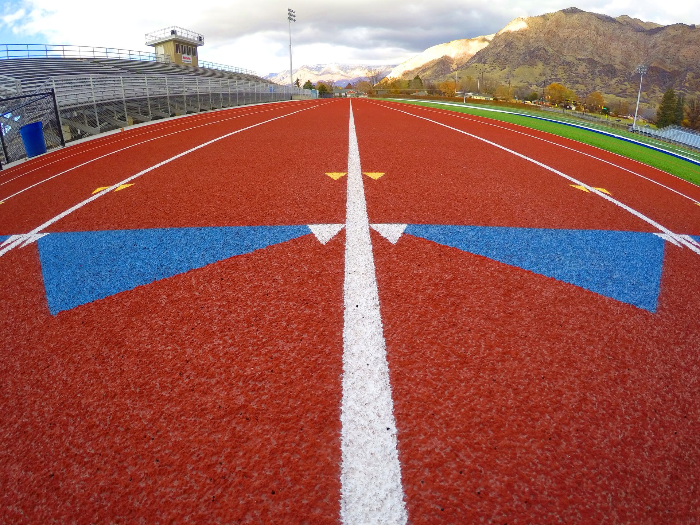

CTB certified. 5,000+ Utah courts. CAD documentation included. The only Utah contractor offering dedicated running track : crack repair, cleaning, striping, and long-term budget forecasting.
SafePlay Pro is the only contractor in Utah offering dedicated running track maintenance programs. While competitors focus exclusively on courts, we maintain the tracks that keep your athletic program running. Literally..
A well-maintained track lasts years longer than a neglected one. Our maintenance programs catch cracks, drainage issues, and surface degradation , before they become emergency repairs that blow your budget.
Every service visit produces detailed CAD drawings of your track’s condition, shared with your staff for in-house management. We forecast upcoming major expenses so you can budget ahead instead of scrambling.
Running track cracks don’t fix themselves. They grow. We repair cracks at the earliest stage, before water infiltration damages the sub-base. Full surface restoration available for tracks that have been neglected.
Regular cleaning removes debris, algae, and contaminants that degrade the surface and create slip hazards. We re-stripe lanes, event marks, and logos to competition spec.
Every track gets a documented maintenance plan with CAD drawings that record repairs, problem areas, and surface condition over time. Your facilities team gets the data they need to manage the track in-house between , plus advance notice of major expenses for budget planning.

We walk the entire track surface, document every crack, worn area, drainage concern, and marking deficiency. You get a complete condition report with CAD drawings before any work begins.
Cracks are routed and filled with materials matched to your track type. Damaged sections are patched or resurfaced. Surface is cleaned and prepped for any coating or striping work.
Lane lines, event marks, start/finish lines, and logos re-applied to competition standards. We verify measurements and use UV-stable marking systems built for Utah’s climate.
Updated CAD drawings delivered to your facilities team. Maintenance schedule established. Upcoming major expenses flagged and forecasted so you can budget , with no surprises.
Most high school and collegiate tracks benefit from professional maintenance 1–2 times per year, with a comprehensive assessment annually. Tracks in heavy-use programs or harsh climates (like Utah’s freeze-thaw cycles) may need quarterly attention. The key is catching small problems early. A $500 crack repair today prevents a $50,000 resurfacing next year.
It depends on the depth, width, and pattern. Hairline cracks and isolated surface cracks are almost always repairable at a fraction of the cost of resurfacing. Deep structural cracks that reach the sub-base, or widespread cracking across the entire surface, may indicate the track needs a full resurface. We’ll tell you honestly which category your track falls into. We don’t upsell resurfacing when repair will do the job.
Annual maintenance programs for a standard 400m track typically run $3,000–$8,000 per year, depending on the track’s condition, age, and the scope of work needed. That’s a fraction of the $150,000–$400,000 cost of a full track . A well-maintained track can last 8–12 years longer than a neglected one.
Yes. We maintain polyurethane, latex, and sandwich-system : both full-pour and spray-coat surfaces. We also maintain multi-use tracks with field event areas. Brian held a CTB (Certified Track Builder) certification and has maintained tracks at high schools, universities, and municipal facilities across Utah.
No hard sell. No mystery pricing. Brian will assess your track and give you an honest : whether that’s a maintenance program, targeted repairs, or a full resurface.
Prefer to call? ☎ 303-880-9362